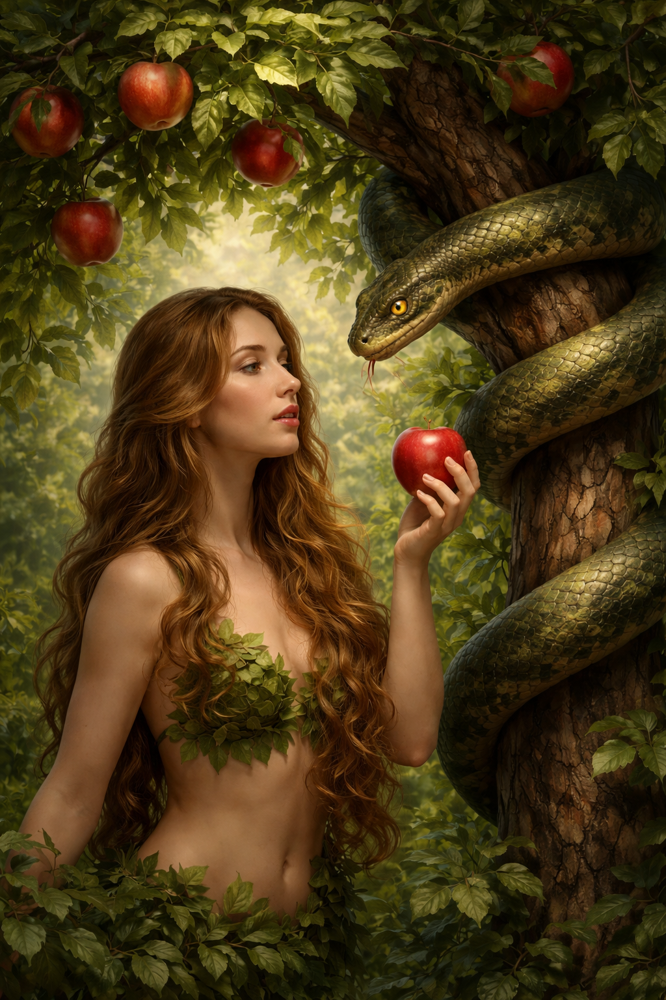

Everything was going well for Adam and Eve they had good food they had shelter and they also could keep eachother company so none of them would be lonely, they even had a bunch of visits from GOD where GOD came and fellowshipped with them. One day while Eve was out collecting some fruit she saw the tree GOD had told them not to eat from, now Adam and Eve were free to do whatever they liked in Eden but there was one tree that GOD had commanded them not to eat from and that was the tree of the knowledge of good and evil. While Eve was picking fruit she came across a serpent that was wrapped around the tree, but something was wrong with this serpent it could speak on Eden the only creatures that should've been able to speak were humans so Eve was frozen not out of fear not our of excitement but out of shock, she had never come across anything other than Adam and GOD that could speak to her. The serpent told Eve to eat the fruit that she was not supposed to, but Eve said to the serpent GOD said we must not eat from that tree or we will die, the serpent told Eve that she would not die and that GOD was scared that her and Adam would get the knowledge of GOD.
